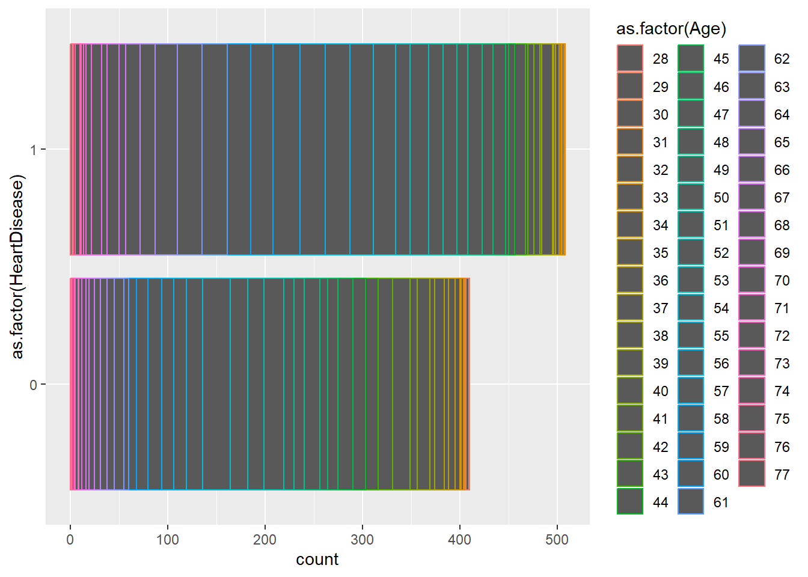
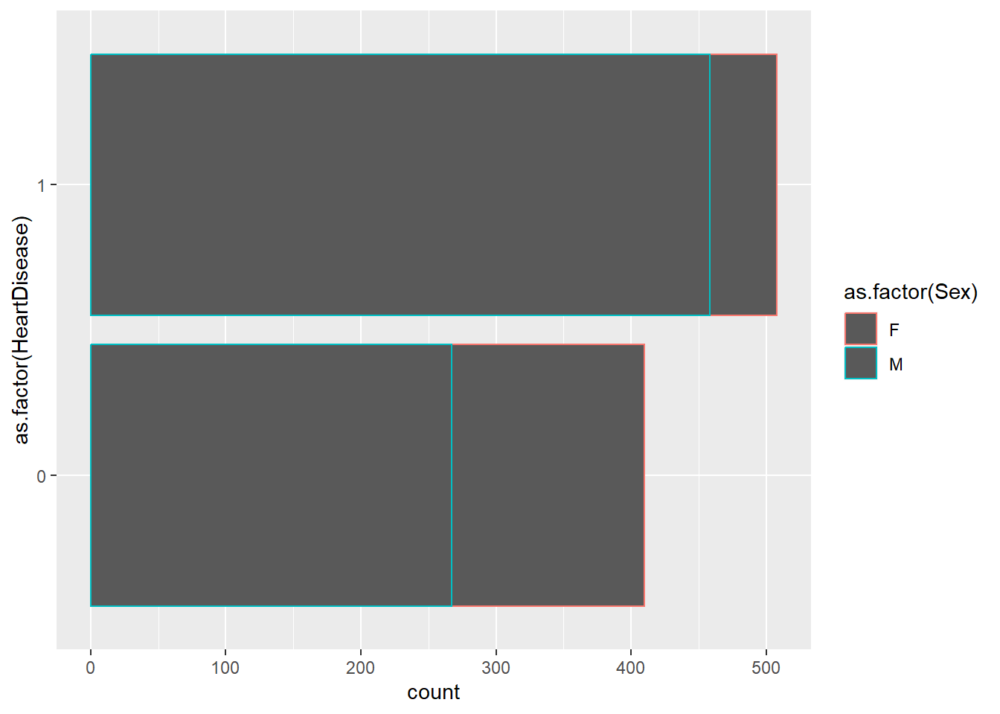

Using cross validation helps verify that the random forest model actually fits the data in a meaningful way. It’s possible to create a random forest model which fits the test data set very well, but isn’t particularly helpful when it comes to the population as a whole. Cross validation which catch such issues.
The bagged tree algorithm helps to reduce the variance of the decision tree estimators by averaging the prediction of some B number of trees, from B bootstrapped data sets for training.
A general linear model (or glm) in R is simply any model which relies somewhat on the basis of linear regression, even if the model itself is non-linear.
The interaction term allows the model to determine the effect of the presence of two predictors at once which it would otherwise be unable to detect from the presence of the two predictors separately. It also is then able to return a better interpretation of the effect of each individual predictor than otherwise.
Splitting a data set into test and training data sets is for model validation. Some model types, such as decision tree and random forest models, will sometimes over fit a data set, so the test data set ensures that the model still performs well even on data from the same population that it was not trained on.
Age Sex ChestPainType RestingBP Cholesterol FastingBS RestingECG MaxHR
1 40 M ATA 140 289 0 Normal 172
2 49 F NAP 160 180 0 Normal 156
3 37 M ATA 130 283 0 ST 98
4 48 F ASY 138 214 0 Normal 108
5 54 M NAP 150 195 0 Normal 122
6 39 M NAP 120 339 0 Normal 170
ExerciseAngina Oldpeak ST_Slope HeartDisease
1 N 0.0 Up 0
2 N 1.0 Flat 1
3 N 0.0 Up 0
4 Y 1.5 Flat 1
5 N 0.0 Up 0
6 N 0.0 Up 0
Quick EDA/ Data Preparation
We’re going to check on missing data and summarize the data, especially with respect to the relationships of variables to the response: HeartDisease
#Do we have any missing response? sum(is.na(heart$HeartDisease)==T) #No.
[1] 0
#Is anything missing at all? sum(is.na(heart)==T) #No.
[1] 0
#Let's look at heart disease by age and sexlibrary(ggplot2)ggplot(data = heart, aes(y =as.factor(HeartDisease), color =as.factor(Age))) +geom_bar()

ggplot(data = heart, aes(y =as.factor(HeartDisease), color =as.factor(Sex))) +geom_bar()

Need to change the HeartDisease variable to a factor and remove the ST_Slope variable.
library(dplyr)
Attaching package: 'dplyr'
The following objects are masked from 'package:stats':
filter, lag
The following objects are masked from 'package:base':
intersect, setdiff, setequal, union
In preparation for kNN, we’re going to use dummy numeric variables for Sex, Chest Pain Type, Exercise Angina, and Resting ECG.
library(caret) #We'll need this library for it.
Warning: package 'caret' was built under R version 4.3.3
Loading required package: lattice
#I'm going to do it this wayheart<- heart %>%mutate(Sex =as.factor(Sex)) %>%mutate(ChestPainType =as.factor(ChestPainType)) %>%mutate(ExerciseAngina =as.factor(ExerciseAngina)) %>%mutate(RestingECG =as.factor(RestingECG))
kNN
#First, we need to split the data into pieces, for test and train. set.seed(1701) #To boldy go where no seed has gone beforefortrain<-createDataPartition(y = heart$HeartDisease, p =0.66, list = F)htrain<- heart[fortrain,]htest<- heart[-fortrain,]#Now we get to specify the CV parameters. 10 folds. 3 repeats. control<-trainControl(method ="repeatedCV", number =10, repeats =3)
Warning: `repeats` has no meaning for this resampling method.
#And now we train the model. set.seed(1701) #A garden can never have too many seeds. Unless it's mint. heart_knn<-train(HeartDisease~., data = htrain, method ="knn",trControl = control,preProcess =c("center", "scale"),tuneLength =40)#Now we get to see how well it didhtest_pred<-predict(heart_knn, newdata = htest)confusionMatrix(htest_pred, htest$HeartDisease)
Confusion Matrix and Statistics
Reference
Prediction 0 1
0 114 34
1 25 138
Accuracy : 0.8103
95% CI : (0.7622, 0.8523)
No Information Rate : 0.5531
P-Value [Acc > NIR] : <2e-16
Kappa : 0.6186
Mcnemar's Test P-Value : 0.2976
Sensitivity : 0.8201
Specificity : 0.8023
Pos Pred Value : 0.7703
Neg Pred Value : 0.8466
Prevalence : 0.4469
Detection Rate : 0.3666
Detection Prevalence : 0.4759
Balanced Accuracy : 0.8112
'Positive' Class : 0
Logistic Regression
Let’s see if we can create a better fitting GLM model
#So glm doesn't have a neat way to do CV so here goes#Randomly shuffle the dataset.seed(1701)heart<-heart[sample(nrow(heart)),]#Create 10 equally size foldsfolds <-cut(seq(1,nrow(heart)),breaks=10,labels=FALSE)#Perform 10 fold cross validationfor(i in1:10){#Segement data by fold using the which() function testIndexes <-which(folds==i,arr.ind=TRUE) htrain_glm <- heart[testIndexes, ] htest_glm <- heart[-testIndexes, ]}#Going for a binomial family to start with since heart disease is binomialset.seed(1701)heart_glm1<-glm(HeartDisease~., data = htrain_glm, family ="binomial")summary(heart_glm1)
Call:
glm(formula = HeartDisease ~ ., family = "binomial", data = htrain_glm)
Coefficients:
Estimate Std. Error z value Pr(>|z|)
(Intercept) 0.488341 4.051327 0.121 0.9041
Age -0.031921 0.041448 -0.770 0.4412
SexM 1.898088 0.898906 2.112 0.0347 *
ChestPainTypeATA -3.286764 1.345513 -2.443 0.0146 *
ChestPainTypeNAP -0.443010 0.836212 -0.530 0.5963
ChestPainTypeTA -2.578496 1.435595 -1.796 0.0725 .
RestingBP 0.001207 0.019261 0.063 0.9500
Cholesterol -0.002127 0.003152 -0.675 0.4997
FastingBS 0.351000 0.806088 0.435 0.6632
RestingECGNormal 0.203950 0.839286 0.243 0.8080
RestingECGST 2.483028 1.165878 2.130 0.0332 *
MaxHR -0.006953 0.012645 -0.550 0.5824
ExerciseAnginaY 0.245931 0.744902 0.330 0.7413
Oldpeak 1.111426 0.444220 2.502 0.0124 *
---
Signif. codes: 0 '***' 0.001 '**' 0.01 '*' 0.05 '.' 0.1 ' ' 1
(Dispersion parameter for binomial family taken to be 1)
Null deviance: 126.84 on 91 degrees of freedom
Residual deviance: 68.78 on 78 degrees of freedom
AIC: 96.78
Number of Fisher Scoring iterations: 6
#This should be terribleheart_glm2<-glm(HeartDisease~log(Age)+Sex+Sex*log(Age), data = htrain_glm, family ="binomial")summary(heart_glm2) #Not as bad as I thought though
Call:
glm(formula = HeartDisease ~ log(Age) + Sex + Sex * log(Age),
family = "binomial", data = htrain_glm)
Coefficients:
Estimate Std. Error z value Pr(>|z|)
(Intercept) -0.7415 13.3943 -0.055 0.956
log(Age) -0.2798 3.3927 -0.082 0.934
SexM -6.6759 14.3650 -0.465 0.642
log(Age):SexM 2.1958 3.6328 0.604 0.546
(Dispersion parameter for binomial family taken to be 1)
Null deviance: 126.84 on 91 degrees of freedom
Residual deviance: 111.35 on 88 degrees of freedom
AIC: 119.35
Number of Fisher Scoring iterations: 4
#Let's try thisheart_glm3<-glm(HeartDisease~log(Age)+Sex+log(Cholesterol+1)+log(Cholesterol+1)*log(Age), data = htrain_glm, family ="binomial")summary(heart_glm3)
Call:
glm(formula = HeartDisease ~ log(Age) + Sex + log(Cholesterol +
1) + log(Cholesterol + 1) * log(Age), family = "binomial",
data = htrain_glm)
Coefficients:
Estimate Std. Error z value Pr(>|z|)
(Intercept) -11.5048 21.6204 -0.532 0.59464
log(Age) 2.6859 5.3523 0.502 0.61579
SexM 1.8436 0.6797 2.712 0.00668 **
log(Cholesterol + 1) 0.7995 3.9993 0.200 0.84156
log(Age):log(Cholesterol + 1) -0.2463 0.9905 -0.249 0.80364
---
Signif. codes: 0 '***' 0.001 '**' 0.01 '*' 0.05 '.' 0.1 ' ' 1
(Dispersion parameter for binomial family taken to be 1)
Null deviance: 126.84 on 91 degrees of freedom
Residual deviance: 109.11 on 87 degrees of freedom
AIC: 119.11
Number of Fisher Scoring iterations: 4
#Okay, the first one did best based on AIC soheart_glm_predict<-predict.glm(heart_glm1, newdata = htest_glm) #This gives log odds and I need 0s and 1heart_glm_pred_prob<-exp(heart_glm_predict)/(1+exp(heart_glm_predict))confusionMatrix(as.factor(round(heart_glm_pred_prob)), as.factor(htest_glm$HeartDisease)) #Close but not the winner
Confusion Matrix and Statistics
Reference
Prediction 0 1
0 289 111
1 71 355
Accuracy : 0.7797
95% CI : (0.7498, 0.8075)
No Information Rate : 0.5642
P-Value [Acc > NIR] : < 2.2e-16
Kappa : 0.5575
Mcnemar's Test P-Value : 0.003842
Sensitivity : 0.8028
Specificity : 0.7618
Pos Pred Value : 0.7225
Neg Pred Value : 0.8333
Prevalence : 0.4358
Detection Rate : 0.3499
Detection Prevalence : 0.4843
Balanced Accuracy : 0.7823
'Positive' Class : 0
Tree Models (Ents with Stats degrees???)
We’re going to use repeated 10 fold CV to get a classification tree model, random forest, and boosted tree.
Classification tree model
heart_classtree<-train(HeartDisease~., data = htrain, method ="rpart",trControl = control,preProcess =c("center", "scale"),cp =0.1)heart_ctpred<-predict(heart_classtree, htest)confusionMatrix(heart_ctpred, htest$HeartDisease) #KNN still winning so far
Confusion Matrix and Statistics
Reference
Prediction 0 1
0 115 37
1 24 135
Accuracy : 0.8039
95% CI : (0.7553, 0.8465)
No Information Rate : 0.5531
P-Value [Acc > NIR] : <2e-16
Kappa : 0.6068
Mcnemar's Test P-Value : 0.1244
Sensitivity : 0.8273
Specificity : 0.7849
Pos Pred Value : 0.7566
Neg Pred Value : 0.8491
Prevalence : 0.4469
Detection Rate : 0.3698
Detection Prevalence : 0.4887
Balanced Accuracy : 0.8061
'Positive' Class : 0
Random Forest (If the forest wasn’t there yesterday, it’s either Ents or Duncan coming for MacBeth)
mtry<-sqrt(ncol(htrain))tunegrid<-expand.grid(.mtry = mtry)heart_rf<-train(HeartDisease~., data = htrain, method ="rf",trControl = control,preProcess =c("center", "scale"),tuneGrid = tunegrid)heart_rf_pred<-predict(heart_rf, htest)confusionMatrix(heart_rf_pred,htest$HeartDisease) #Booo it's the best so far
Confusion Matrix and Statistics
Reference
Prediction 0 1
0 109 24
1 30 148
Accuracy : 0.8264
95% CI : (0.7796, 0.8668)
No Information Rate : 0.5531
P-Value [Acc > NIR] : <2e-16
Kappa : 0.6473
Mcnemar's Test P-Value : 0.4962
Sensitivity : 0.7842
Specificity : 0.8605
Pos Pred Value : 0.8195
Neg Pred Value : 0.8315
Prevalence : 0.4469
Detection Rate : 0.3505
Detection Prevalence : 0.4277
Balanced Accuracy : 0.8223
'Positive' Class : 0
Boosted tree
library(gbm)
Warning: package 'gbm' was built under R version 4.3.3
Loaded gbm 2.2.2
This version of gbm is no longer under development. Consider transitioning to gbm3, https://github.com/gbm-developers/gbm3